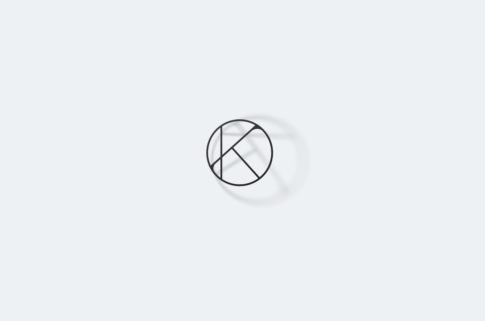

Kateryna Tanska Branding
Kateryna Tanska is a young independent hairstylist. She required a fresh take on her branding to help headstart her career, refresh existing social media channels, and position her as a gritty and creative professional.
Kateryna is inspired by fashion culture, worships self-developments and embrace simplicity. I worked with her to develop mission statement that drived further branding development.
Mission
Inspire confidence and uplift women by creating hears that are beautiful, elegant and emphasize their unique personality.
Driving Principles
Learn constantly. Inspire others to do the same. Embrace women’s uniqueness. Work smart. Be nice.
I created a set of illustrion that would reflect Kate’s personality and naturally expanded the brand language. These illustrations were used to add some fun accents on the site, as Instagrams story covers and stickers.